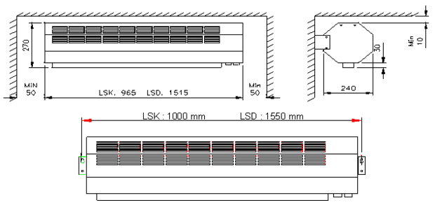

BN Thermic Instruction Sheet
High Capacity Over Door Heaters LSK & LSD
INSTALLATION AND OPERATING INSTRUCTIONS
PACKAGING - Unpack the heater carefully and remove all packaging material ensuring that all open areas are unobstructed, remove and retain these instructions for future use.

LOCATION - Uses are for general space heating and therefore must not be installed or used in areas containing flammable, explosive materials and or vapours. Do not cover the heater as this can cause overheating and may damage the heater and could result in a risk of fire.
POSITIONING - The LSK & LSD over door heaters are intended to be mounted on the inside wall as close to the upper edge of the door frame or ceiling as possible, in order to reduce draughts associated with opening and closing of doors, and also helps to prevent heat loss from the building. The LSK & LSD air curtains are recommended for door openings up to 3.0 metres high. For safe distances and installation measurements please follow the diagrams below.
The minimum distance from the heat source to the point at which the door breaks the air flow must not be less than 50mm in 4 and 6kW curtains, and 100mm in 9 to 12kW curtains.
FIXING -Two mounting brackets are supplied with LSK-LSD. The brackets are fitted to each end of the air curtain. The air curtain may be mounted on the wall or ceiling, and can also be mounted vertically along the side of the door.
WIRlNG - All electrical connections must be carried out by a qualified or instructed person. The LSK and LSD air curtains are factory fitted with integral thermostat control. The optional BB- type remote control is available to remotely control the LSK or LSD air curtains 5 x 1.5mm cables are required to connect the LSK or LSD to the remote control unit. Up to 6 units can be connected to share the same control box, see diagram and assembly instructions for remote control box. Ensure all terminals are tightened and check security before replacing the cover. Power control wiring min 4.0mm. Finally check to make sure there is no foreign material in the unit before assembling.
OPERATING - The LSK and LSD are thoroughly factory tested prior to despatch. The front cover is hinged and can be opened with the top two screws. Check all the external cables are wired correctly according to the diagram enclosed in the air curtain. Megger the unit for safety before finally energising. Switch on the power and check the functionality of all controls, thermostat, selector switch, etc. 1) The unit thermostat can be set from 0-40 2) The Hi - Lo switch controls the motor speed. 3) Heat selector switch Off, * Fan only, * ½ heat, * Full heat. THIS HEATER MUST BE EARTHED
GENERAL MAINTENANCE ON ELECTRIC HEATERS
Prior to commencing any periodic cleaning or servicing always ensure the supply to the heater is completely isolated.
BN Thermic Electric heaters are factory assembled and tested they are non user serviceable.
The heaters are intended to operate for many years, problem free.
All moving parts are factory lubricated and therefore should require no service.
Operating and maintenance is limited to keeping both the inlet and outlet areas free from any accumulation of dust or any other foreign materials.
This is especially important immediately before the heating season. Any dust build up can be loosened using a brush and a vacuum cleaner applied to the airways to ensure completed removal of any dust. When the heater is first turned on after cleaning an unusual odour may be noted this is due to the dust particles which inevitably will be disturbed and will be burnt off from the heating element.
If in any doubt always consult a qualified electrician for advice.
WARRANTY. Your BN Thermic Heater is guaranteed for the period of one year from the date of purchase. We will repair or replace at our discretion any part found to be defective. BN Thermic cannot assume any consequential liability. This guarantee in no way prejudices your rights under common law and is offered as an addition to consumer liability rights.